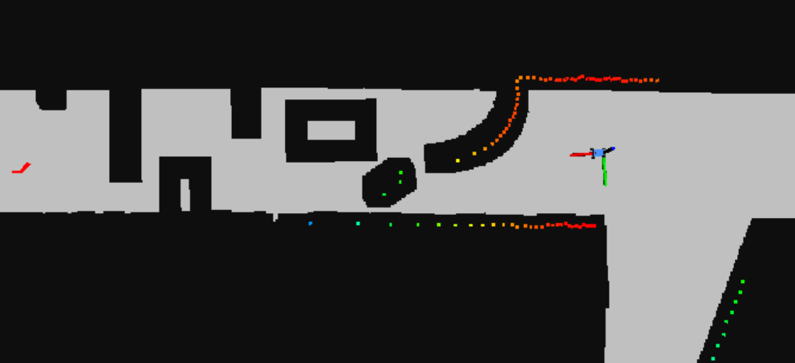

Slides for this lab are also accessible here.
It’s one thing for a robot to autonomously navigate an open hallway, but it’s another to detect and avoid unknown obstacles in its path. In this challenge we were tasked with avoiding obstacles in the path of our robot that were not shown in the known map of the Stata basement. In order to complete this challenge, it was necessary to adapt components from previous labs, including the particle filter localization from Lab 5, as well as the A* path planner and pure pursuit controller from Lab 6.
A constraint of this challenge was to navigate the obstacle course without sacrificing speed. Some properties that we could count on were that the obstacles would be stationary, there would be no dead ends or concave obstacles, and they wouldn’t obscure more than 50% of the hallway width.
The grading for this challenge was based on the accuracy of nativagation as well as the severity of collisions if they occur. Additional points were given for navigating the obstacle course at higher speeds. There were also points given for demonstrating robustness to obstacle changes.
Special thanks to Alon for providing such a fun and interesting problem!
One of the most important challenges in implementing fast obstacle avoidance was maintaining an accurate map with which to localize, as well as one with which to plan paths. We chose to maintain two different representations of this map, each representing the same Stata basement, but each optimized to the needs of the two purposes. We also had to consider when to dilate these maps and when to leave them undilated, the rationale for which will be discussed below.
For localization, we used the original stata basement map, undilated and free of obstacles. This map needed to be undilated because dilation alters the ground truth of objects on the map in order to be able to treat the car as a point mass when it traverses the occupancy grid. In the case of localization, we needed to maintain the ground truth of the walls around the car so that it could accurately pinpoint its location on the map. We also did not want to add obstacles to the map used by the particle filter, because we did not want to compound any error in detecting and drawing these obstacles, which would quickly make our map unusable for localizing the car. Because we were using the previously implemented particle filter for localization, we had to optimize the sensor model for the obstacle course environment. To account for the presence of these unmapped obstacles, we tuned the parameters of the particle filter to expect short lidar scans and random lidar measurements at a higher probability, thus effectively telling the particle filter to ignore small disturbances in the hallway and prioritize using further obstacles, like the hallway walls, to orient itself.
For path planning, we chose to keep an internal representation of the map (published only for visualization purposes), that was dilated and continually updated with new obstacles based on incoming lidar scan information. This map needed to be dilated because it planned paths assuming the car was a point mass, so obstacles were inflated to create a configuration space in which the point mass could move freely without implying collisions of the physical car as a rigid body. In order to update the map used for planning paths, we used incoming lidar scans to calculate the indices of cells in an occupancy grid that should be marked as nonpermissible. This was done by using the distance and angle of each lidar scan to calculate the changes in the x and y directions and applying a rotation matrix to transform these changes into the world frame. In addition to each detected obstacle cell, all of the cells in a surrounding square with side lengths based on the width of the car were also marked as occupied, effectively providing real time dilation.
In using this map updating process, we discovered that we needed a measure to prevent error from compounding over time and adding nonpermissible regions where there were not actually obstacles. To counteract this compounding of error, we implemented a preventative clearing of the map every time we added new obstacles. We reset the map to the original map of the Stata basement with only the walls dilated, so as to correct for any mistakenly blocked out cells in the grid that would artificially trap the car such that it could not plan a path to the goal.
This processing of lidar scans did not occur on every incoming lidar message, but was rather tuned to about 10 Hz. Any faster and the planned trajectories would often flicker between two conflicting but similarly optimal options, confusing the pure pursuit controller, any slower and the path planning would not be responsive enough to “see” new obstacles coming into range quickly enough to prevent a collision. When a lidar scan was processed, we called our A* search algorithm to plan a path between the current location of the car according to the particle filter and the fixed goal point in the world frame. We found we had to adapt our A* implementation by decreasing the step size; larger step sizes are quick and can be accurate enough in long-range situations like Stata basement loop race, but will miss small obstacles entirely in the obstacle course environment, planning paths that go right through the obstacles. Figure 1 below shows all of these parts working together; visualizing the internal map with obstacles in rviz was too slow to be practical, but the colorful lidar scan shows the presence of boxes in the hallway and the continually updating red trajectory shows how A* plans paths around them. Figure 2 shows the relationship between the ROS nodes used to implement this design.
Figure 1 - Visualization of Following Continually Updating Trajectories The colorful scans represent the lidar measurements from the perspective of the car. Some of them line up with the walls, while others line up with obstacles from the obstacle course not present on our map. The red trajectory from the car to the goal is continually updated using A*, going around obstacles when necessary.
Figure 2 - ROS Node Implementation The particle filter localization publishes inferred_pose, which gives a location to the path planner and the path follower. The path planner uses this location as well as incoming /scan data to plan a path from the location to the goal using A*, while the path follower uses this location as well as the incoming trajectories from the path planner to stay on the trajectories with a pure pursuit controller.
Once we have computed a trajectory around the visible objects, we must issue drive commands to the vehicle to follow the path. We used the pure pursuit controller that was implemented in previous labs, but a few changes were necessary to adapt it for this challenge.
The most important requirement was for the vehicle to be more agile, leaving less room for divergence from the trajectory. In past labs, the ‘pursuit’ subsystem of the pure pursuit controller would just naively set the steering angle to the relative position of the point in the car’s frame. Essentially, we relied on the fact that there can be as many as a hundred timesteps before the vehicle reaches the point, and that the steering will straighten itself out as it approaches the pursued point. However, this fails at higher speeds, since the sharp changes in steering angle when switching points causes the car to drift and not maintain its path.
To mitigate this, we implemented a steering angle function that uses the Ackermann steering equations, computing a turn radius to reach the point, and steering along that turning circle. The individual timesteps would then be used for infinitesimally correcting that calculated turning circle. In addition, the controller was modified to ignore points on the trajectory that were inside of the tightest turning circle of the car, so that it does not end up ‘orbiting’ the point without reaching it.
Since the points were unevenly spaced and given as a discrete set of points, choosing the point closest to the lookahead distance was another challenge to overcome. Computing the equation of a line between two points and finding the intersection with the lookahead circle would be computationally intensive and unnecessary, considering that the points are no more than ~0.5 meters apart. Since the trajectory that’s given is a linear array of points to be followed in order, we simply compute the distance to the first point, and increment a counter if it is closer than the lookahead distance. We repeat this until we get the first point just outside the lookahead distance.
We also implemented a variable-velocity system that reduces speed around corners. We do this by looking at the segment of trajectory between the current pursued point and another point slightly further than that. Using simple geometry, we can compute our estimated pose at the current pursued point, and then compute the turn radius to the next point. With simple kinematics, we can compute the maximum velocity given the turn radius and the coefficient of friction, which we empirically determined. The controller then sets the current velocity based on that future turn radius, so that the car has adequate time to slow down before entering the curve.
Videos of the car avoiding obstacles at high speed are shown below in Figures 3, 4, and 5.
Figure 3 - Complex path at 1 m/s
Figure 4 - Regular path at 2 m/s
Figure 5 - First-person view of complex path at 2 m/s
Due to the nature of this challenge, determining quantitative methods of evaluating our mapping and pure pursuit algorithms was difficult, especially in simulation. In order to test whether our mapping and path planning were going to work, we would need to be able to simulate a map that could update as if the robot could not see far obstacles. Alternatively, one could dynamically place markers in Rviz to simulate an obstacle coming into view. However, we decided that implementing these simulations would have been less efficient than simply testing on the robot dut to the limitations of the Rviz race car simulator. For example, in simulation the Lidar scan is determined by the map itself, whereas in real life it is determined by the environment. Even though we did not use simulations for experimental evaluation purposes, we did us them to debug our code and to make sure changes we still made a clean dilated map and did not slow down the speed of planning a trajectory (Figure 6).
Figure 6 - Testing Maps in Simulation This image shows our dilated map and Lidar scan in simulation. This type of simulation was used to test whether the dilated map remained clean (similar to the map at the start) after the path planning began.
Even when we were testing on the robot, it was difficult for us to quantitatively analyze the accuracy of our controller given that our planned trajectory was being updated rapidly. Normally, we would take the error of the position of the robot and the trajectory it was supposed to follow, but since there was no ground truth for the robot to follow, this essentially could not be done.
As mentioned earlier, one important parameter in our code was the dilation size of newly added points to the map. Due to the importance of this parameter in our code, we decided to determine the optimal value through a simple timed experiment. Given the width of the robot, we created a buffer variable to be a percentage of this width. This value, in meters, determined the radius of dilation for any point added by the Lidar scans. Using the same obstacle course for all the trials, a set speed of 2 meters/second was used. Similarly, all other parameters, such as lookahead distance, callback frequency, and maximum Lidar range remained the same. The results of varying this parameter are shown in Figure 7.
We found that changing the buffer size did not significantly affect the time of completion for the course. However, any buffer size over 1.25 led to over dilation and no path being found. In theory, having a smaller buffer would allow our robot to plan a trajectory closer to the obstacles, thus creating a more optimal path. However, since we found the buffer size to not make a significant difference at this speed, we decided to use the highest buffer size possible before no path can be found. (Note that this buffer size may be different given the orientation/spread of the obstacles.)
Figure 7 - Effect of Buffer Size on Time to Complete Course This graph shows the average times of completion of the robot given a given course and varying the buffer size. For these trials, the displacement of the track was 50 meters and the robot was operating at a speed of 2 meters/second.
This final project was definitely a learning experience in terms of learning about the science and systems of robotics, but also in teamwork and time management.
Early on, the teaching assistants advised us to spend more time on the state estimator than the controller, but we took this to a bit of an extreme. We barely spent any time on the controller and basically just hacked the wide curve controller from the stata basement loop to work for the quick turns of the obstacle avoidance. This was definitely a lesson learned because the car could not handle the quick turns of the obstacle course with the dexterity that we desired.
Another part that we wish we had done differently was making the remapping more computationally efficient. It would have been better if we could have updated the map when we see obstacles with more speed without sacrificing accuracy.
Both of these lessons had to do with time management, which we found very difficult with the fast pace of the class. Another major lesson was around teamwork and how to most effectively work in a team of people that you don’t know. It took us a while to get used to each others working styles, but in the end we made it work!